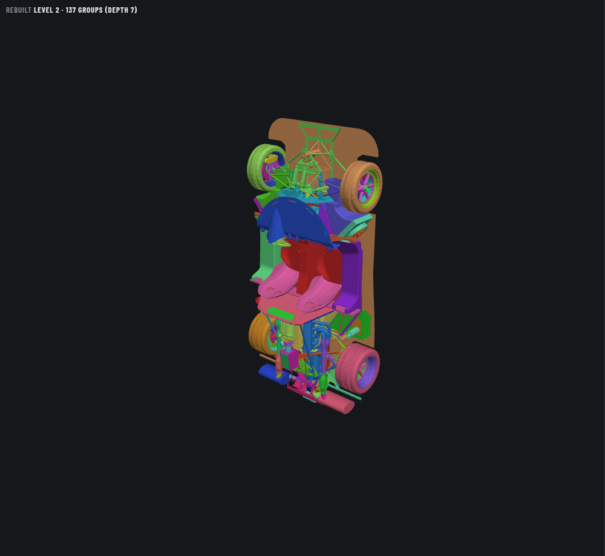
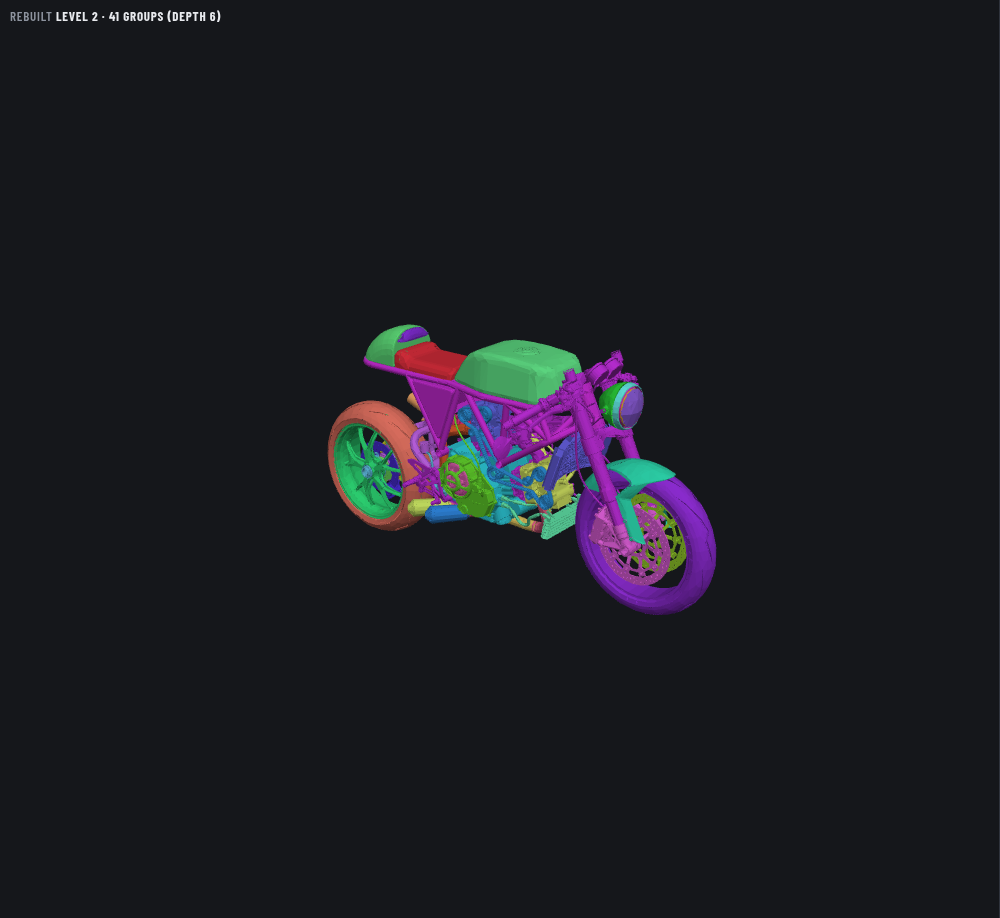
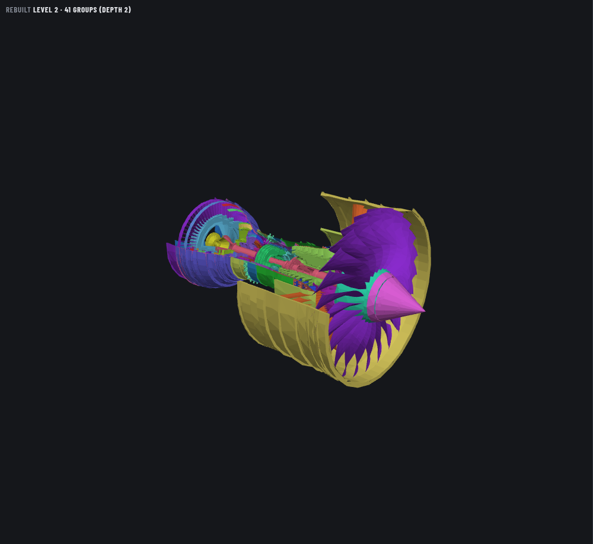
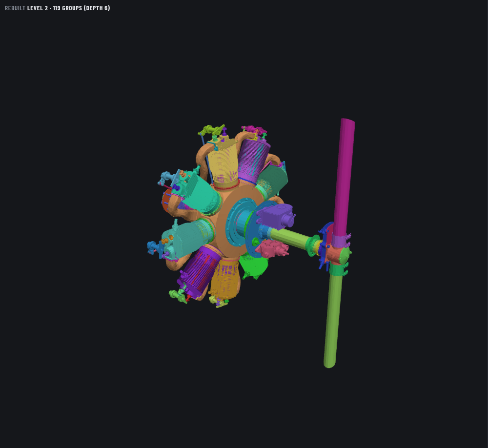
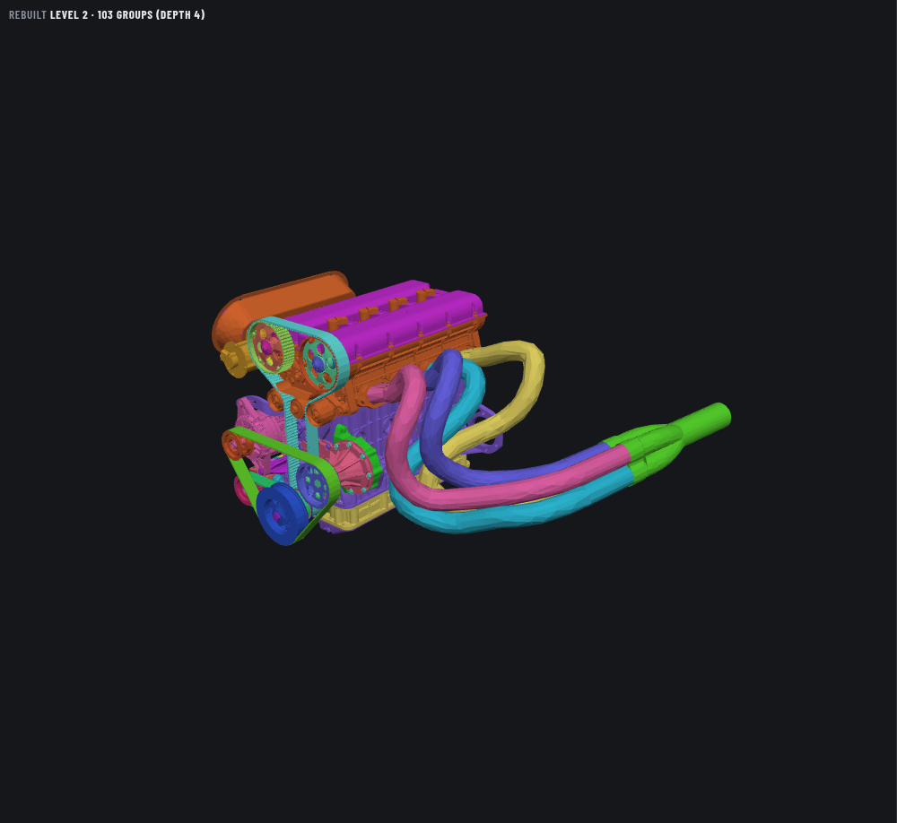

Redback Spyder chassis
1,635 atomic parts · hierarchy depth 7

Exposed frame, suspension springs, engine, exhaust and cockpit. Best car candidate.
Catalog name: redback spyder chassis
Previews captured from the catalog on port 8818. The Ducati 996 café racer is available in the model selector. The other models remain preview candidates.
1,635 atomic parts · hierarchy depth 7

Exposed frame, suspension springs, engine, exhaust and cockpit. Best car candidate.
Catalog name: redback spyder chassis
1,215 atomic parts · hierarchy depth 6

Visible engine, tubular frame, drilled brake discs, drivetrain and suspension. Best complete vehicle silhouette.
Catalog name: ducati 996 café racer néo retro Roadster
1,272 atomic parts · hierarchy depth 2

Cutaway casing reveals shafts and multiple compressor/turbine stages. Strong visual; hierarchy is only two levels deep.
Catalog name: Trent 900 Step
1,302 atomic parts · hierarchy depth 6

Radial cylinders, cooling fins, exposed valve gear and propeller. Strong mechanical detail and six hierarchy levels.
Catalog name: Le Rhone Engine
1,225 atomic parts · hierarchy depth 4

Visible timing belt, pulleys and sweeping exhaust headers. Compact, dense mechanical assembly.
Catalog name: engine_type_01_2_liter_asm